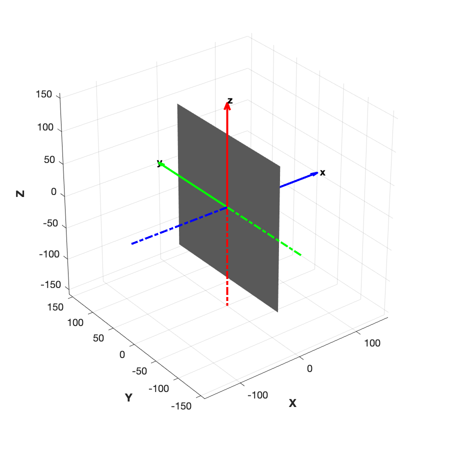
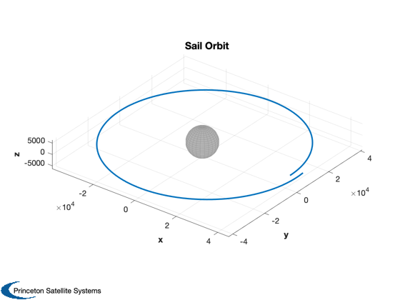
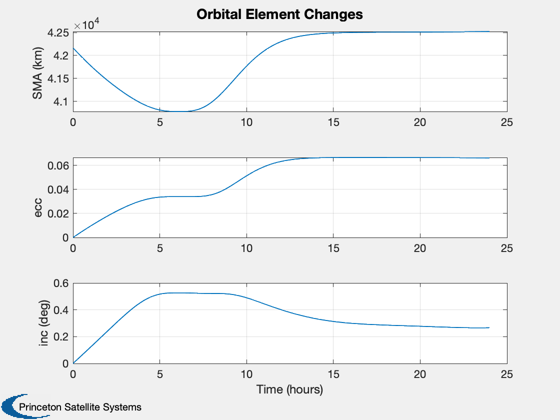
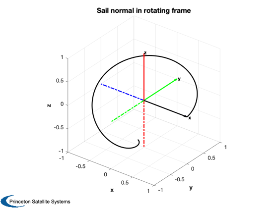
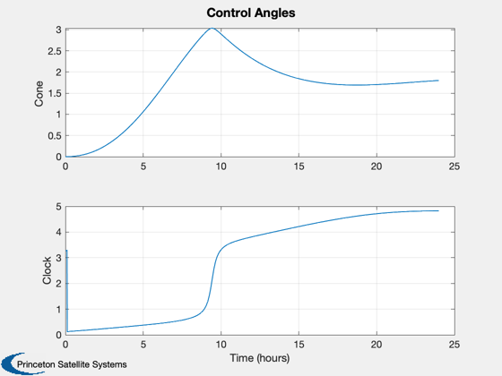
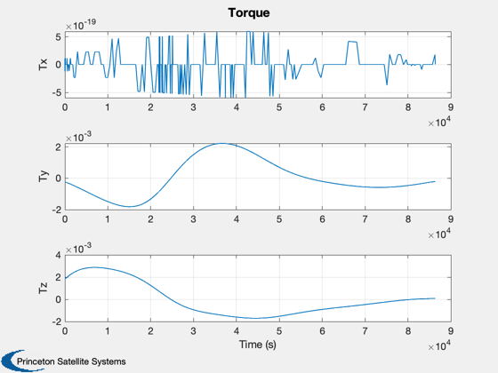

Demonstrate combined simulation for a sail orbiting the Earth.
Sail is initialized pointing directly towards the sun. The default attitude dynamics function, FSailRB, provides rigid body dynamics with no control. The example sail, FlatSail, has no rotating or moving parts.
Since version 7. ------------------------------------------------------------------------ See also: FSailCombined SailEnvironment SailDisturbance SailEphemEarth FOrbitSingle QSail, Constant, FindDirectory, InformDlg, Plot2D, Date2JD, El2RV, SunV2, DisturbanceStruct, EnvironmentStruct, PlotSailProfile, DisplaySailProperties ------------------------------------------------------------------------
Contents
- Place sail in a GEO orbit
- Initialize simulation data structure
- Override ephemeris function for single central body (earth)
- Load a CAD model - flat, specular sail
- Initialize the environment model (SailEnvironment)
- Initialize the disturbance model (SailDisturbance)
- Initialize the attitude model (FSailRB)
- Initialize the orbit model
- Extract the disturbance profile
%--------------------------------------------------------------------------- % Copyright (c) 2006 Princeton Satellite Systems, Inc. % All rights reserved. %---------------------------------------------------------------------------
Place sail in a GEO orbit
%--------------------------
el = [42167 0 0 0 0 0];
[r,v] = El2RV( el );
jD = Date2JD;
[uSun,rS] = SunV2( jD );
q = QSail( uSun, r, v );
w = [0;0;0];
Initialize simulation data structure
%-------------------------------------
d = FSailCombined;
d.jD0 = jD;
Override ephemeris function for single central body (earth)
%------------------------------------------------------------ d.ephemeris = 'SailEphemEarth';
Load a CAD model - flat, specular sail
%--------------------------------------- d.g = load('FlatSail.mat'); DisplaySailProperties( d.g );
-----------------------
Flat Specular Sail
Sail normal: [1 0 0]
Sail area: 50000 m2
Sail mass: 100 kg
Sail inertia (kg/m2):
833333.33 0 0
0 416666.67 0
0 0 416666.67
Sail characteristic accel: 4.5267 mm/s2
Number of bodies in model: 1
Number of components in model: 1
Sail class components: 1
Sail optical properties
Component Sail:
Specular Front: 1 Back: 1
Diffuse Front: 0 Back: 0
Absorptivity Front: 0 Back: 0
Emissivity Front: 0.03 Back: 0.03
 Initialize the environment model (SailEnvironment)
%---------------------------------------------------
d = EnvironmentStruct( d );
Initialize the disturbance model (SailDisturbance)
%--------------------------------------------------- clear SailDisturbance d = DisturbanceStruct( d );
Initialize the attitude model (FSailRB)
%----------------------------------------
d.inr = d.g.mass.inertia;
d.invInr = inv(d.g.mass.inertia);
Initialize the orbit model
%--------------------------- d.orbit = 'FOrbitSingle'; d.planet = 'earth'; clear FOrbitSingle FOrbitSingle( 'add', 3, Constant('mu earth') ); d.center = 1; p = []; opts = odeset('abstol',1e-12,'reltol',1e-10); hDlg = InformDlg( 'Integrating...', 'SailCombinedDemo' ); [z, x] = ode113( @FSailCombined, [0 86400], [r;v;q;w], opts, p, d ); close(hDlg); xPlot = x'; tPlot = z';
Extract the disturbance profile
%-------------------------------- [p, env, f, tq] = FSailCombined( tPlot, xPlot, p, d ); PlotSailProfile( p, env, [1;0;0] ); Plot2D(tPlot,tq.total,'Time (s)',{'Tx','Ty','Tz'},'Torque') dataDir = FindDirectory('SailData'); save(fullfile(dataDir,'SailCombinedDemoOutput'),'xPlot','tPlot','p','env',... 'f','tq','d','-V6'); %-------------------------------------- % PSS internal file version information %--------------------------------------    